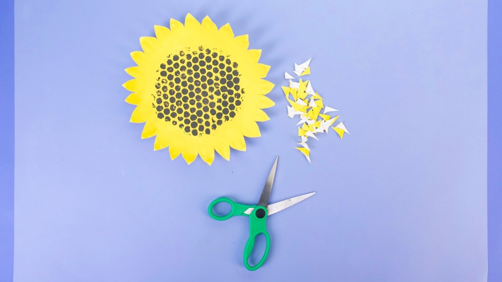
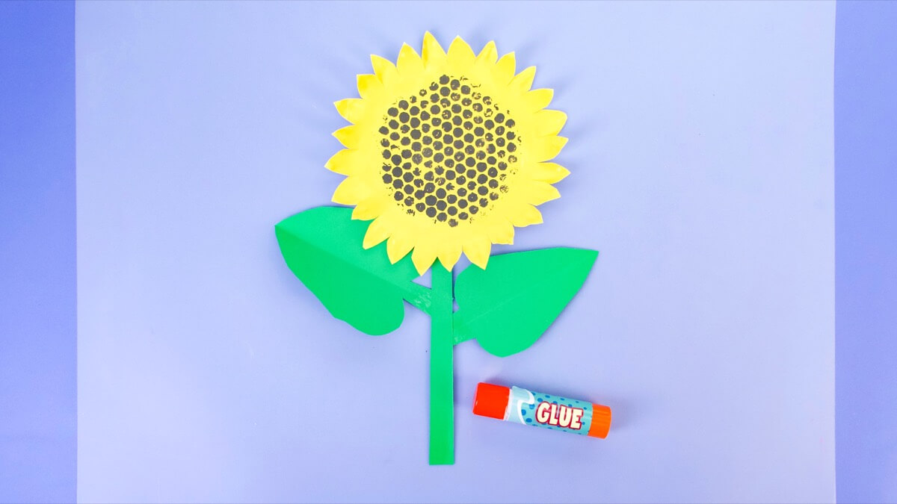

Paper Sunflowers
Amount
1Items needed:
- 1 paper plate
- green construction paper
- 1 bubble wrap
- craft paint – yellow, black, or brown
- paint brush
- 1 straw
- scissors
Instructions:
-
First, lay your piece of bubble wrap down on the paper plate flat side facing up. Draw the inner
circle of the paper plate onto the bubble wrap and cut it out. Set these parts aside for later.

-
Next, paint your paper plate yellow and set it aside to dry.

-
Now we can stamp! Brush some black paint on the bubbly side of the bubble wrap circle and press it
evenly in the centre of your yellow paper plate.
Peel it off carefully to reveal a super cool pattern!

-
When the paint is dry, you can cut the sunflower petals evenly around the edge of the plate, about
¾” apart.
Cut out the tips of each petal by making two curves that join in the middle and form a point. Bend the petals to give some relief to your flower.
 -
Next, cut the long length of green paper to make your sunflower stem.

-
Cut the remaining green paper in half, then fold each half and draw half of a leaf shape starting
from the folded edge.

-
Glue your sunflower stem, leaves and petals together with a glue stick.
